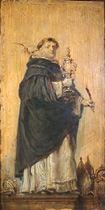

|  |
|---|

[1] In primis super quatuor libros sententiarum.
[2] Summam totius theologie, scilicet primam partem theologie summe.
[3] Primam secunde.
[4] Secundam secunde.
[5] Tertiam partem summe.
[6] Summam contra gentiles.
[7] Volumen unum super quatuor evangelistas.
[8] Postillas super Johannen.
[9] Super evangelia dominicalia totius anni.
[10] Totum officium de Corpore Christi, tam diurnum quam nocturnum.
[11] Postillas super epistolam Pauli ad romanos.
[12] Item super corinthios.
[13] Item super epistolam ad hebreos usque ad IX capitulum.
[14] Super Ysaiam.
[15] Super Job.
[16] Super Jeremiam.
[17] Et threnos.
[18] Et cantica canticorum.
[19] Super tres nocturnos psalterii.
[20] Super primum librum de anima.
[21] Super Matheum.
[22] Questiones de veritate.
[23] De potentia Dei.
[24] De anima.
[25] De virtutibus.
[26] De malo.
[27] De spiritualibus creaturis.
[28] Scripsit XI quolibet disputata.
[29] Super librum physicorum.
[30] Super metaphysicam.
[31] Super tres libros de celo et mundo.
[32] Super librum de generatione et corruptione.
[33] Super duos libros methaurorum.
[34] Super secundum et tertium de anima.
[35] Super librum de sensu et sensato.
[36] Super librum de memoria et reminiscentia.
[37] Super librum ethicorum.
[38] Super quatuor libros politicoru.
[39] Super librum de causis et propositiones Proculi.
[40] Super librum primum et secundum posteriorum.
[41] Super librum peryhermenias.
[42] tractatus de principiis nature.
[43] De natura materie.
[44] De quatuor oppositionibus.
[45] De verbo vel natura verbi intellectualis.
[46] De motibus naturalibus corporis seu de operationibus occultis nature.
[47] De motu cordis.
[48] De esse et essentia.
[49] De demonstratione.
[50] De fallaciis.
[51] De angelis seu de substantiis separatis.
[52] Tractatus contra errores averroistarum.
[53] De unitate intellectus.
[54] De sortibus.
[55] De judiciis astrorum.
[56] De regimine judeorum.
[57] De responsionibus ad XL tres articulos.
[58] De responsione ad multos articulos.
[59] De responsionibus ad XXX sex articulos.
[60] Item alius tractatus ad Urbanum papam contra errorem grecorum.
[61] De regimine principum.
[62] De propositionibus modalibus.
[63] De eternitate mundi.
[64] De expositione salutationis angelice.
[65] De expositione orationis dominice.
[66] De articulis fidei et ecclesie sacramentis.
[67] Item brevis declaratio quorundam articulorum fidei quos impugnant greci et armeni et sarraceni.
[68] Item tractatus continens expositionem secunde decretalis Dampnamus etc.
[69] Tractatus cle perfectione vite spiritualis.
[70] Tractatus de forma absolutionis sacramentalis.
[71] Tractatus de mixtione elementorum.
[72] Tractatus super librum Boetii.
[73] De hepdomadibus.
[74] Tractatus super librum Boetii de trinitate.
[75] Tractatus super libros Dyonisii de divinis nominibus.
[76] Tractatus de perfectione christiane religionis.
[77] Tractatus contra impugnantes religionem, scilicet contra Guiliermum de sancto Amore et sequaces ejus.
[78] Tractatus de compendio theologie.
[79] Tractatus de preceptis.
[80] Tractatus de fato.
Summa omnium CXXX. Semper secum habebat quatuor scriptores, et in dubiis semper orabat.